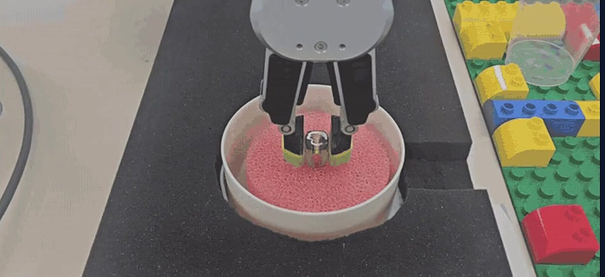
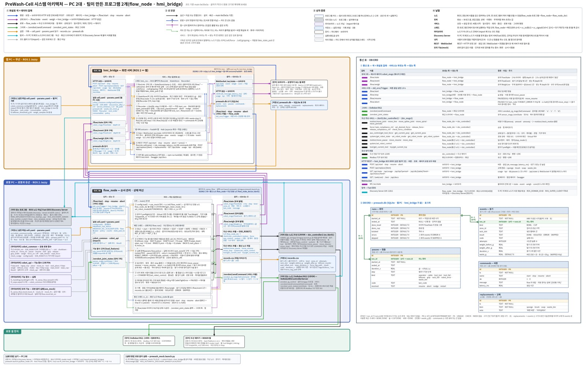

Project 2 · 협동로봇 실기
PreWash-Cell
협동로봇 1대가 다회용기를 집고, 잔반을 판정하고, 닦아서 세척기 팔레트에 꽂는다

약 13분배속 1.0 무정지 완주
7 / 7수락 기준 충족
7종예외 상황 실기 복구
01무엇을 만들었나
버튼 한 번으로 협동로봇이 집기 → 잔반 판정 → 닦기 → 헹굼 → 적재까지 처리하는 세척 셀입니다. 카메라를 쓸 수 없는 조건이라 파지 폭 · 무게 · 힘 값으로 용기 상태를 판단합니다.

02내가 한 일
- PM · 인터페이스 — 함수 계약과 메시지를 먼저 고정해 4명이 로봇 없이 병렬로 개발하게 했습니다.
- 운영 화면 · 기록 DB — 현장 작업자용 화면과 용기별 처리 기록 DB. 버튼 응답 7~96 ms.
- 무게 측정 안정화 — 측정 오차의 원인을 케이블 장력으로 좁혀 보정 절차를 정했습니다.
- 셀 통합 — 9/22부터 통합을 맡아 배속 1.0 무정지 완주까지 끌고 갔습니다.
03막혔던 문제와 해결
상황
로봇 명령이 두 번째 호출부터 멈춰 연속 동작이 되지 않았습니다.
원인
ROS 2 콜백 안에서 로봇 명령을 호출해 실행 스레드가 서로 막혔습니다.
해결
실행 방식 5종을 비교 시험한 뒤, 로봇 명령을 메인 스레드 한 곳으로 모으는 구조를 택했습니다.
결과
연속 6회 성공, 이후 무정지 완주의 바탕이 되었습니다.
03-2무게 측정이 흔들린 문제
상황
같은 용기인데 경로에 따라 무게가 약 90 g까지 다르게 읽혔습니다.
원인
그리퍼 케이블의 장력이 자세마다 달라져 힘 센서 값에 섞였습니다.
해결
케이블 여유 확보, HOME 경유, 실행 직전 기준값 측정, 30회 중앙값 사용.
결과
96 g 용기 오차 +3 g, 잔반 4/4 감지, 오판 0/8.
04배운 점
- 인터페이스를 먼저 고정하면 로봇 한 대로도 팀 전체가 동시에 일할 수 있습니다.
- 센서 값이 흔들리면 코드보다 케이블 · 자세 같은 물리 조건을 먼저 의심해야 합니다.